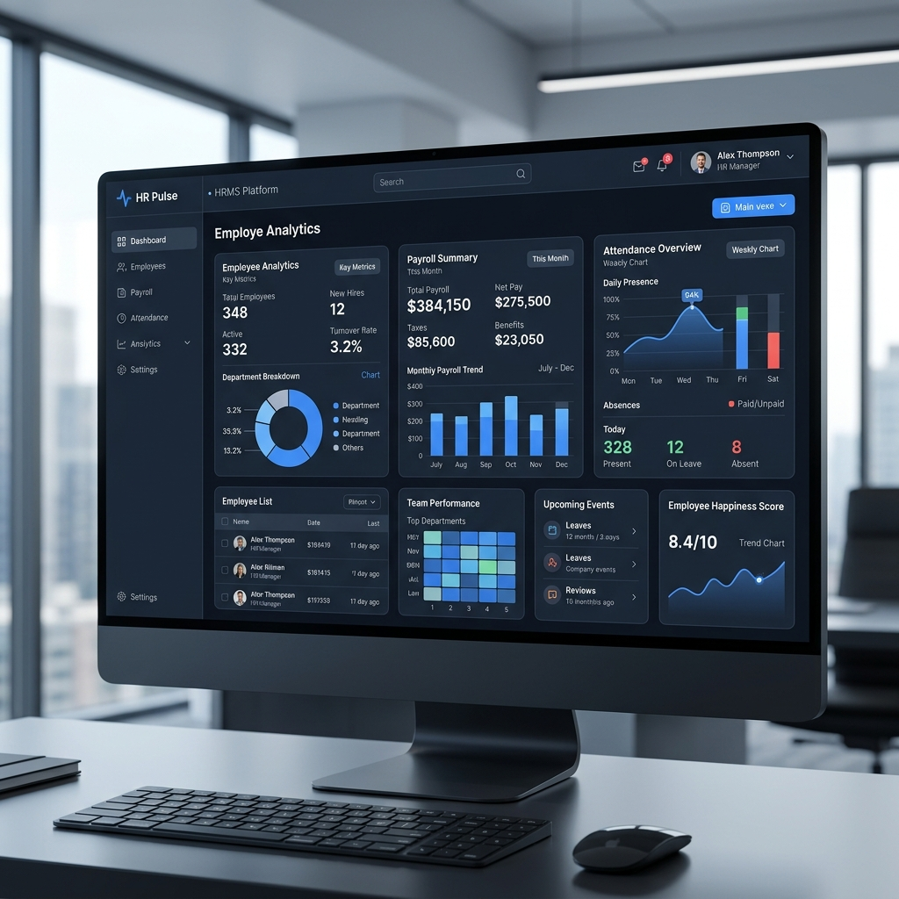

A custom internal platform designed for teams handling attendance, payroll, leave workflows, and employee records without relying on scattered spreadsheets or repetitive manual processing.
Payroll and HR operations were slowed down by disconnected records, manual calculations, and inconsistent attendance input. The team needed one system that could reduce processing effort, improve visibility, and support employee operations without introducing more admin overhead.

We designed a centralized HRMS workflow that brought employee records, attendance capture, payroll logic, and self-service actions into one operational system.
The build focused on practical internal operations rather than feature sprawl.
Reduction in payroll processing time
Cleaner accuracy target for payroll calculations
Employees supported in one system
If your team is still relying on spreadsheets, manual review, or disconnected systems, we can help shape the right internal platform around your actual process.